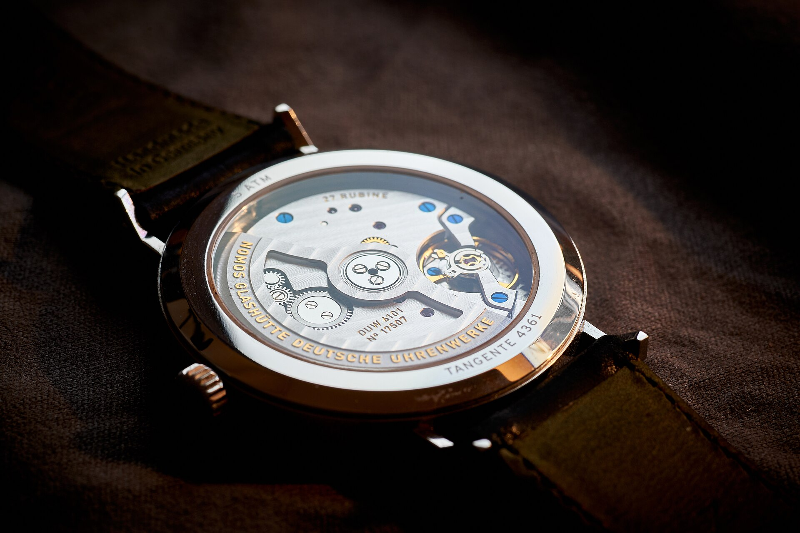
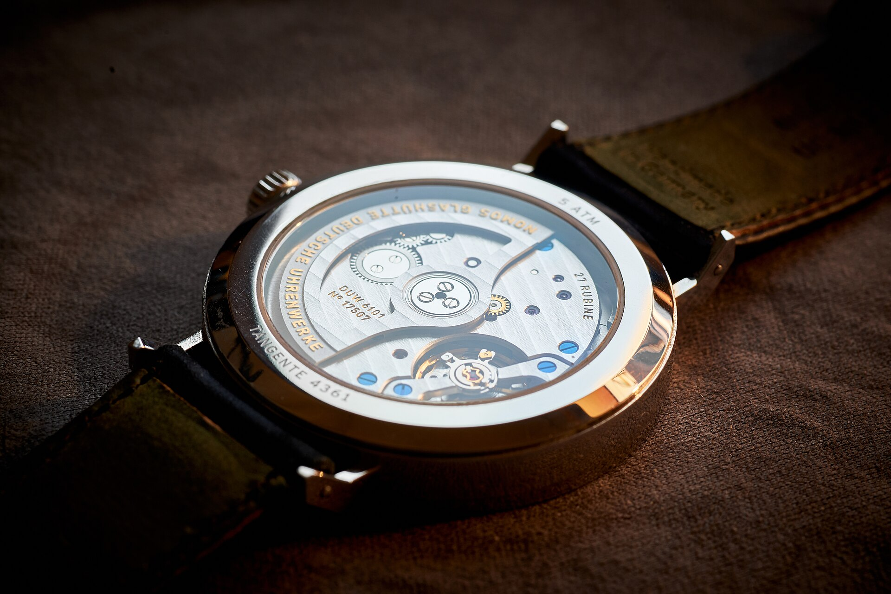

Montres · Classique
Montre Élégance
Boîtier tonneau doré aux flancs guillochés, cadran ivoire et bracelet cuir noir.
Demander conseilPrécision mécanique et lignes intemporelles.
Boîtier tonneau doré aux flancs guillochés, cadran ivoire et bracelet cuir noir.
Demander conseil
Petite seconde, cadran champagne et aiguilles dorées : l'esprit des années 40.
Demander conseil
Fond transparent révélant un mouvement finement décoré, boîtier acier poli.
Demander conseil
Mouvement automatique visible, bracelet cuir patiné, finitions soignées.
Demander conseilPhotographies et modèles présentés à titre d'illustration.